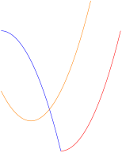
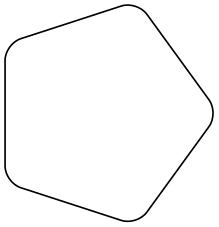

The TikZ and PGF Packages
Manual for version 3.1.9a
The Basic Layer
101 Constructing Paths
101.1 Overview¶
The “basic entity of drawing” in pgf is the path. A path consists of several parts, each of which is either a closed or open curve. An open curve has a starting point and an end point and, in between, consists of several segments, each of which is either a straight line or a Bézier curve. Here is an example of a path (in red) consisting of two parts, one open, one closed:
\begin{tikzpicture}[scale=2]
\draw[thick,red]
(0,0) coordinate
(a)
--
coordinate
(ab) (1,.5) coordinate
(b)
.. coordinate
(bc) controls
+(up:1cm) and
+(left:1cm) .. (3,1) coordinate
(c)
(0,1) --
(2,1) --
coordinate
(x) (1,2) --
cycle;
\draw (a) node[below] {start
part
1}
(ab) node[below right] {straight
segment}
(b) node[right] {end
first
segment}
(c) node[right] {end
part
1}
(x) node[above right] {part
2
(closed)};
\end{tikzpicture}
A path, by itself, has no “effect”, that is, it does not leave any marks on the page. It is just a set of points on the plane. However, you can use a path in different ways. The most natural actions are stroking (also known as drawing) and filling. Stroking can be imagined as picking up a pen of a certain diameter and “moving it along the path”. Filling means that everything “inside” the path is filled with a uniform color. Naturally, the open parts of a path must first be closed before a path can be filled.
In pgf, there are numerous commands for constructing paths, all of which start with \pgfpath. There are also commands for using paths, though most operations can be performed by calling \pgfusepath with an appropriate parameter.
As a side-effect, the path construction commands keep track of two bounding boxes. One is the bounding box for the current path, the other is a bounding box for all paths in the current picture. See Section 101.13 for more details.
Each path construction command extends the current path in some way. The “current path” is a global entity that persists across TeX groups. Thus, between calls to the path construction commands you can perform arbitrary computations and even open and close TeX groups. The current path only gets “flushed” when the \pgfusepath command is called (or when the soft-path subsystem is used directly, see Section 120).
101.2 The Move-To Path Operation¶
The most basic operation is the move-to operation. It must be given at the beginning of paths, though some path construction command (like \pgfpathrectangle) generate move-tos implicitly. A move-to operation can also be used to start a new part of a path.
\pgfpathmoveto{⟨coordinate⟩} ¶
This command expects a pgf-coordinate like \pgfpointorigin as its parameter. When the current path is empty, this operation will start the path at the given ⟨coordinate⟩. If a path has already been partly constructed, this command will end the current part of the path and start a new one.
\begin{pgfpicture}
\pgfpathmoveto{\pgfpointorigin}
\pgfpathlineto{\pgfpoint{1cm}{1cm}}
\pgfpathlineto{\pgfpoint{2cm}{1cm}}
\pgfpathlineto{\pgfpoint{3cm}{0.5cm}}
\pgfpathlineto{\pgfpoint{3cm}{0cm}}
\pgfsetfillcolor{yellow!80!black}
\pgfusepath{fill,stroke}
\end{pgfpicture}
\begin{pgfpicture}
\pgfpathmoveto{\pgfpointorigin}
\pgfpathlineto{\pgfpoint{1cm}{1cm}}
\pgfpathlineto{\pgfpoint{2cm}{1cm}}
\pgfpathmoveto{\pgfpoint{2cm}{1cm}} % New part
\pgfpathlineto{\pgfpoint{3cm}{0.5cm}}
\pgfpathlineto{\pgfpoint{3cm}{0cm}}
\pgfsetfillcolor{yellow!80!black}
\pgfusepath{fill,stroke}
\end{pgfpicture}
The command will apply the current coordinate transformation matrix to ⟨coordinate⟩ before using it.
It will update the bounding box of the current path and picture, if necessary.
101.3 The Line-To Path Operation¶
\pgfpathlineto{⟨coordinate⟩} ¶
This command extends the current path in a straight line to the given ⟨coordinate⟩. If this command is given at the beginning of path without any other path construction command given before (in particular without a move-to operation), the TeX file may compile without an error message, but a viewer application may display an error message when trying to render the picture.
\begin{pgfpicture}
\pgfpathmoveto{\pgfpointorigin}
\pgfpathlineto{\pgfpoint{1cm}{1cm}}
\pgfpathlineto{\pgfpoint{2cm}{1cm}}
\pgfsetfillcolor{yellow!80!black}
\pgfusepath{fill,stroke}
\end{pgfpicture}
The command will apply the current coordinate transformation matrix to ⟨coordinate⟩ before using it.
It will update the bounding box of the current path and picture, if necessary.
101.4 The Curve-To Path Operations¶
\pgfpathcurveto{⟨support 1⟩}{⟨support 2⟩}{⟨coordinate⟩} ¶
This command extends the current path with a Bézier curve from the last point of the path to ⟨coordinate⟩. The ⟨support 1⟩ and ⟨support 2⟩ are the first and second support point of the Bézier curve. For more information on Bézier curves, please consult a standard textbook on computer graphics.
Like the line-to command, this command may not be the first path construction command in a path.
\begin{pgfpicture}
\pgfpathmoveto{\pgfpointorigin}
\pgfpathcurveto
{\pgfpoint{1cm}{1cm}}{\pgfpoint{2cm}{1cm}}{\pgfpoint{3cm}{0cm}}
\pgfsetfillcolor{yellow!80!black}
\pgfusepath{fill,stroke}
\end{pgfpicture}
The command will apply the current coordinate transformation matrix to ⟨coordinate⟩ before using it.
It will update the bounding box of the current path and picture, if necessary. However, the bounding box is simply made large enough such that it encompasses all of the support points and the ⟨coordinate⟩. This will guarantee that the curve is completely inside the bounding box, but the bounding box will typically be quite a bit too large. It is not clear (to me) how this can be avoided without resorting to “some serious math” in order to calculate a precise bounding box.
\pgfpathquadraticcurveto{⟨support⟩}{⟨coordinate⟩} ¶
This command works like \pgfpathcurveto, only it uses a quadratic Bézier curve rather than a cubic one. This means that only one support point is needed.
\begin{pgfpicture}
\pgfpathmoveto{\pgfpointorigin}
\pgfpathquadraticcurveto
{\pgfpoint{1cm}{1cm}}{\pgfpoint{2cm}{0cm}}
\pgfsetfillcolor{yellow!80!black}
\pgfusepath{fill,stroke}
\end{pgfpicture}
Internally, the quadratic curve is converted into a cubic curve. The only noticeable effect of this is that the points used for computing the bounding box are the control points of the converted curve rather than ⟨support⟩. The main effect of this is that the bounding box will be a bit tighter than might be expected. In particular, ⟨support⟩ will not always be part of the bounding box.
There exist two commands to draw only part of a cubic Bézier curve:
\pgfpathcurvebetweentime{⟨time \(t_1\)⟩}{⟨time \(t_2\)⟩}{⟨point p⟩}{⟨point \(s_1\)⟩}{⟨point \(s_2\)⟩}{⟨point q⟩} ¶
This command draws the part of the curve described by \(p\), \(s_1\), \(s_2\) and \(q\) between the times \(t_1\) and \(t_2\). A time value of 0 indicates the point \(p\) and a time value of 1 indicates point \(q\). This command includes a moveto operation to the first point.
\begin{tikzpicture}
\draw [thin] (0,0) .. controls
(0,2) and
(3,0) .. (3,2);
\pgfpathcurvebetweentime{0.25}{0.9}{\pgfpointxy{0}{0}}{\pgfpointxy{0}{2}}
{\pgfpointxy{3}{0}}{\pgfpointxy{3}{2}}
\pgfsetstrokecolor{red}
\pgfsetstrokeopacity{0.5}
\pgfsetlinewidth{2pt}
\pgfusepath{stroke}
\end{tikzpicture}
\pgfpathcurvebetweentimecontinue{⟨time \(t_1\)⟩}{⟨time \(t_2\)⟩}{⟨point p⟩}{⟨point \(s_1\)⟩}{⟨point \(s_2\)⟩}{⟨point q⟩} ¶
This command works like \pgfpathcurvebetweentime, except that a moveto operation is not made to the first point.
101.5 The Close Path Operation¶
\pgfpathclose ¶
This command closes the current part of the path by appending a straight line to the start point of the current part. Note that there is a difference between closing a path and using the line-to operation to add a straight line to the start of the current path. The difference is demonstrated by the upper corners of the triangles in the following example:
\begin{tikzpicture}
\draw[help lines] (0,0) grid
(3,2);
\pgfsetlinewidth{5pt}
\pgfpathmoveto{\pgfpoint{1cm}{1cm}}
\pgfpathlineto{\pgfpoint{0cm}{-1cm}}
\pgfpathlineto{\pgfpoint{1cm}{-1cm}}
\pgfpathclose
\pgfpathmoveto{\pgfpoint{2.5cm}{1cm}}
\pgfpathlineto{\pgfpoint{1.5cm}{-1cm}}
\pgfpathlineto{\pgfpoint{2.5cm}{-1cm}}
\pgfpathlineto{\pgfpoint{2.5cm}{1cm}}
\pgfusepath{stroke}
\end{tikzpicture}
101.6 Arc, Ellipse and Circle Path Operations¶
The path construction commands that we have discussed up to now are sufficient to create all paths that can be created “at all”. However, it is useful to have special commands to create certain shapes, like circles, that arise often in practice.
In the following, the commands for adding (parts of) (transformed) circles to a path are described.
\pgfpatharc{⟨start angle⟩}{⟨end angle⟩}{⟨radius⟩ and ⟨y-radius⟩} ¶
This command appends a part of a circle (or an ellipse) to the current path. Imagine the curve between ⟨start angle⟩ and ⟨end angle⟩ on a circle of radius ⟨radius⟩ (if \(\meta {start angle} < \meta {end angle}\), the curve goes around the circle counterclockwise, otherwise clockwise). This curve is now moved such that the point where the curve starts is the previous last point of the path. Note that this command will not start a new part of the path, which is important for example for filling purposes.
\begin{tikzpicture}
\draw[help lines] (0,0) grid
(3,2);
\pgfpathmoveto{\pgfpointorigin}
\pgfpathlineto{\pgfpoint{0cm}{1cm}}
\pgfpatharc{180}{90}{.5cm}
\pgfpathlineto{\pgfpoint{3cm}{1.5cm}}
\pgfpatharc{90}{-45}{.5cm}
\pgfusepath{fill}
\end{tikzpicture}
Saying \pgfpatharc{0}{360}{1cm} “nearly” gives you a full circle. The “nearly” refers to the fact that the circle will not be closed. You can close it using \pgfpathclose.
If the optional ⟨y-radius⟩ is given, the ⟨radius⟩ is the \(x\)-radius and the ⟨y-radius⟩ the \(y\)-radius of the ellipse from which the curve is taken:
\begin{tikzpicture}
\draw[help lines] (0,0) grid
(3,2);
\pgfpathmoveto{\pgfpointorigin}
\pgfpatharc{180}{45}{2cm
and
1cm}
\pgfusepath{draw}
\end{tikzpicture}
The axes of the circle or ellipse from which the arc is “taken” always point up and right. However, the current coordinate transformation matrix will have an effect on the arc. This can be used to, say, rotate an arc:
\begin{tikzpicture}
\draw[help lines] (0,0) grid
(3,2);
\pgftransformrotate{30}
\pgfpathmoveto{\pgfpointorigin}
\pgfpatharc{180}{45}{2cm
and
1cm}
\pgfusepath{draw}
\end{tikzpicture}
The command will update the bounding box of the current path and picture, if necessary. Unless rotation or shearing transformations are applied, the bounding box will be tight.
\pgfpatharcaxes{⟨start angle⟩}{⟨end angle⟩}{⟨first axis⟩}{⟨second axis⟩} ¶
This command is similar to \pgfpatharc. The main difference is how the ellipse or circle is specified from which the arc is taken. The two parameters ⟨first axis⟩ and ⟨second axis⟩ are the \(0^\circ \)-axis and the \(90^\circ \)-axis of the ellipse from which the path is taken. Thus, \pgfpatharc{0}{90}{1cm and 2cm} has the same effect as
\pgfpatharcaxes{0}{90}{\pgfpoint{1cm}{0cm}}{\pgfpoint{0cm}{2cm}}
\begin{tikzpicture}
\draw[help lines] (0,0) grid
(3,2);
\draw (0,0) --
(2cm,5mm) (0,0) --
(0cm,1cm);
\pgfpathmoveto{\pgfpoint{2cm}{5mm}}
\pgfpatharcaxes{0}{90}{\pgfpoint{2cm}{5mm}}{\pgfpoint{0cm}{1cm}}
\pgfusepath{draw}
\end{tikzpicture}
\pgfpatharcto{⟨x-radius⟩}{⟨y-radius⟩}{⟨rotation⟩} {⟨large arc flag⟩}{⟨counterclockwise flag⟩}
{⟨target point⟩}
¶
This command (which directly corresponds to the arc-path command of svg) is used to add an arc to the path that starts at the current point and ends at ⟨target point⟩. This arc is part of an ellipse that is determined in the following way: Imagine an ellipse with radii ⟨x-radius⟩ and ⟨y-radius⟩ that is rotated around its center by ⟨rotation⟩ degrees. When you move this ellipse around in the plane, there will be exactly two positions such that the two current point and the target point lie on the border of the ellipse (excluding pathological cases). The flags ⟨large arc flag⟩ and ⟨clockwise flag⟩ are then used to decide which of these ellipses should be picked and which arc on the picked ellipsis should be used.

\begin{tikzpicture}
\draw[help lines] (0,0) grid
(3,2);
\pgfpathmoveto{\pgfpoint{0mm}{20mm}}
\pgfpatharcto{3cm}{1cm}{0}{0}{0}{\pgfpoint{3cm}{1cm}}
\pgfusepath{draw}
\end{tikzpicture}
Both flags are considered to be false exactly if they evaluate to 0, otherwise they are true. If the ⟨large arc flag⟩ is true, then the angle spanned by the arc will be greater than \(180^\circ \), otherwise it will be less than \(180^\circ \). The ⟨clockwise flag⟩ is used to determine which of the two ellipses should be used: if the flag is true, then the arc goes from the current point to the target point in a counterclockwise direction, otherwise in a clockwise fashion.
\begin{tikzpicture}
\pgfsetlinewidth{2pt}
% Flags 0 0: red
\pgfsetstrokecolor{red}
\pgfpathmoveto{\pgfpointorigin}
\pgfpatharcto{20pt}{10pt}{0}{0}{0}{\pgfpoint{20pt}{10pt}}
\pgfusepath{stroke}
% Flags 0 1: blue
\pgfsetstrokecolor{blue}
\pgfpathmoveto{\pgfpointorigin}
\pgfpatharcto{20pt}{10pt}{0}{0}{1}{\pgfpoint{20pt}{10pt}}
\pgfusepath{stroke}
% Flags 1 0: orange
\pgfsetstrokecolor{orange}
\pgfpathmoveto{\pgfpointorigin}
\pgfpatharcto{20pt}{10pt}{0}{1}{0}{\pgfpoint{20pt}{10pt}}
\pgfusepath{stroke}
% Flags 1 1: black
\pgfsetstrokecolor{black}
\pgfpathmoveto{\pgfpointorigin}
\pgfpatharcto{20pt}{10pt}{0}{1}{1}{\pgfpoint{20pt}{10pt}}
\pgfusepath{stroke}
\end{tikzpicture}
Warning: The internal computations necessary for this command are numerically very unstable. In particular, the arc will not always really end at the ⟨target coordinate⟩, but may be off by up to several points. A more precise positioning is currently infeasible due to TeX’s numerical weaknesses. The only case it works quite nicely is when the resulting angle is a multiple of \(90^\circ \).
\pgfpatharctoprecomputed{⟨center point⟩}{⟨start angle⟩}{⟨end angle⟩}{⟨end point⟩}
{⟨x-radius⟩}{⟨y-radius⟩}{⟨ratio x-radius/y-radius⟩}{⟨ratio y-radius/x-radius⟩}
¶
A specialized arc operation which is fast and numerically stable, provided a lot of information is given in advance.
In contrast to \pgfpatharc, it explicitly interpolates start and end points.
In contrast to \pgfpatharcto, this routine is numerically stable and quite fast since it relies on a lot of available information.
\begin{tikzpicture}
\draw[help lines] (0,0) grid
(3,2);
\def\cx{1.5cm}% center x
\def\cy{1cm}% center y
\def\startangle{0}%
\def\endangle{270}%
\def\a{1.5cm}% xradius
\def\b{0.5cm}% yradius
\pgfmathparse{\a/\b}\let\abratio=\pgfmathresult
\pgfmathparse{\b/\a}\let\baratio=\pgfmathresult
%
% start point:
\pgfpathmoveto{\pgfpoint{\cx+\a*cos(\startangle)}{\cy+\b*sin(\startangle)}}%
\pgfpatharctoprecomputed
{\pgfpoint{\cx}{\cy}}
{\startangle}
{\endangle}
{\pgfpoint{\cx+\a*cos(\endangle)}{\cy+\b*sin(\endangle)}}% end point
{\a}
{\b}
{\abratio}
{\baratio}
\pgfusepath{draw}
\end{tikzpicture}
\pgfpatharctomaxstepsize ¶
The quality of arc approximation taken by \pgfpatharctoprecomputed by means of Bézier splines is controlled by a mesh width, which is initially
\def\pgfpatharctoprecomputed{45}.
The mesh width is provided in (full!) degrees. The smaller the mesh width, the more precise the arc approximation.
Use an empty value to disable spline approximation (uses a single cubic polynomial for the complete arc).
The value must be an integer!
\pgfpathellipse{⟨center⟩}{⟨first axis⟩}{⟨second axis⟩} ¶
The effect of this command is to append an ellipse to the current path (if the path is not empty, a new part is started). The ellipse’s center will be ⟨center⟩ and ⟨first axis⟩ and ⟨second axis⟩ are the axis vectors. The same effect as this command can also be achieved using an appropriate sequence of move-to, arc, and close operations, but this command is easier and faster.
\begin{tikzpicture}
\draw[help lines] (0,0) grid
(3,2);
\pgfpathellipse{\pgfpoint{1cm}{0cm}}
{\pgfpoint{1.5cm}{0cm}}
{\pgfpoint{0cm}{1cm}}
\pgfusepath{draw}
\color{red}
\pgfpathellipse{\pgfpoint{1cm}{0cm}}
{\pgfpoint{1cm}{1cm}}
{\pgfpoint{-0.5cm}{0.5cm}}
\pgfusepath{draw}
\end{tikzpicture}
The command will apply coordinate transformations to all coordinates of the ellipse. However, the coordinate transformations are applied only after the ellipse is “finished conceptually”. Thus, a transformation of 1cm to the right will simply shift the ellipse one centimeter to the right; it will not add 1cm to the \(x\)-coordinates of the two axis vectors.
The command will update the bounding box of the current path and picture, if necessary.
\pgfpathcircle{⟨center⟩}{⟨radius⟩} ¶
A shorthand for \pgfpathellipse applied to ⟨center⟩ and the two axis vectors \((\meta {radius},0)\) and \((0,\meta {radius})\).
101.7 Rectangle Path Operations¶
Another shape that arises frequently is the rectangle. Two commands can be used to add a rectangle to the current path. Both commands will start a new part of the path.
\pgfpathrectangle{⟨corner⟩}{⟨diagonal vector⟩} ¶
Adds a rectangle to the path whose one corner is ⟨corner⟩ and whose opposite corner is given by \(\meta {corner} + \meta {diagonal vector}\).
\begin{tikzpicture}
\draw[help lines] (0,0) grid
(3,2);
\pgfpathrectangle{\pgfpoint{1cm}{0cm}}{\pgfpoint{1.5cm}{1cm}}
\pgfpathrectangle{\pgfpoint{1.5cm}{0.25cm}}{\pgfpoint{1.5cm}{1cm}}
\pgfpathrectangle{\pgfpoint{2cm}{0.5cm}}{\pgfpoint{1.5cm}{1cm}}
\pgfusepath{draw}
\end{tikzpicture}
The command will apply coordinate transformations and update the bounding boxes tightly.
\pgfpathrectanglecorners{⟨corner⟩}{⟨opposite corner⟩} ¶
Adds a rectangle to the path whose two opposing corners are ⟨corner⟩ and ⟨opposite corner⟩.
\begin{tikzpicture}
\draw[help lines] (0,0) grid
(3,2);
\pgfpathrectanglecorners{\pgfpoint{1cm}{0cm}}{\pgfpoint{1.5cm}{1cm}}
\pgfusepath{draw}
\end{tikzpicture}
The command will apply coordinate transformations and update the bounding boxes tightly.
101.8 The Grid Path Operation¶
\pgfpathgrid[⟨options⟩]{⟨first corner⟩}{⟨second corner⟩} ¶
Appends a grid to the current path. That is, a (possibly large) number of parts are added to the path, each part consisting of a single horizontal or vertical straight line segment.
Conceptually, the origin is part of the grid and the grid is clipped to the rectangle specified by the ⟨first corner⟩ and the ⟨second corner⟩. However, no clipping occurs (this command just adds parts to the current path) and the points where the lines enter and leave the “clipping area” are computed and used to add simple lines to the current path.
The following keys influence the grid:
/pgf/stepx=⟨dimension⟩ (no default, initially 1cm) ¶
The horizontal stepping.
/pgf/stepy=⟨dimension⟩ (no default, initially 1cm) ¶
The vertical stepping.
/pgf/step=⟨vector⟩(no default) ¶
Sets the horizontal stepping to the \(x\)-coordinate of ⟨vector⟩ and the vertical stepping to its \(y\)-coordinate.
\begin{pgfpicture}
\pgfsetlinewidth{0.8pt}
\pgfpathgrid[step={\pgfpoint{1cm}{1cm}}]
{\pgfpoint{-3mm}{-3mm}}{\pgfpoint{33mm}{23mm}}
\pgfusepath{stroke}
\pgfsetlinewidth{0.4pt}
\pgfpathgrid[stepx=1mm,stepy=1mm]
{\pgfpoint{-1.5mm}{-1.5mm}}{\pgfpoint{31.5mm}{21.5mm}}
\pgfusepath{stroke}
\end{pgfpicture}
The command will apply coordinate transformations and update the bounding boxes. As for ellipses, the transformations are applied to the “conceptually finished” grid.
\begin{pgfpicture}
\pgftransformrotate{10}
\pgfpathgrid[stepx=1mm,stepy=2mm]{\pgfpoint{0mm}{0mm}}{\pgfpoint{30mm}{30mm}}
\pgfusepath{stroke}
\end{pgfpicture}
101.9 The Parabola Path Operation¶
\pgfpathparabola{⟨bend vector⟩}{⟨end vector⟩} ¶
This command appends two half-parabolas to the current path. The first starts at the current point and ends at the current point plus ⟨bend vector⟩. At this point, it has its bend. The second half parabola starts at that bend point and ends at point that is given by the bend plus ⟨end vector⟩.
If you set ⟨end vector⟩ to the null vector, you append only a half parabola that goes from the current point to the bend; by setting ⟨bend vector⟩ to the null vector, you append only a half parabola that goes through the current point and ⟨end vector⟩ and has its bend at the current point.
It is not possible to use this command to draw a part of a parabola that does not contain the bend.

\begin{pgfpicture}
% Half-parabola going ``up and right''
\pgfpathmoveto{\pgfpointorigin}
\pgfpathparabola{\pgfpointorigin}{\pgfpoint{2cm}{4cm}}
\color{red}
\pgfusepath{stroke}
% Half-parabola going ``down and right''
\pgfpathmoveto{\pgfpointorigin}
\pgfpathparabola{\pgfpoint{-2cm}{4cm}}{\pgfpointorigin}
\color{blue}
\pgfusepath{stroke}
% Full parabola
\pgfpathmoveto{\pgfpoint{-2cm}{2cm}}
\pgfpathparabola{\pgfpoint{1cm}{-1cm}}{\pgfpoint{2cm}{4cm}}
\color{orange}
\pgfusepath{stroke}
\end{pgfpicture}
The command will apply coordinate transformations and update the bounding boxes.
101.10 Sine and Cosine Path Operations¶
Sine and cosine curves often need to be drawn and the following commands may help with this. However, they only allow you to append sine and cosine curves in intervals that are multiples of \(\pi /2\).
\pgfpathsine{⟨vector⟩} ¶
This command appends a sine curve in the interval \([0,\pi /2]\) to the current path. The sine curve is squeezed or stretched such that the curve starts at the current point and ends at the current point plus ⟨vector⟩.
\begin{tikzpicture}
\draw[help lines] (0,0) grid
(3,1);
\pgfpathmoveto{\pgfpoint{1cm}{0cm}}
\pgfpathsine{\pgfpoint{1cm}{1cm}}
\pgfusepath{stroke}
\color{red}
\pgfpathmoveto{\pgfpoint{1cm}{0cm}}
\pgfpathsine{\pgfpoint{-2cm}{-2cm}}
\pgfusepath{stroke}
\end{tikzpicture}
The command will apply coordinate transformations and update the bounding boxes.
\pgfpathcosine{⟨vector⟩} ¶
This command appends a cosine curve in the interval \([0,\pi /2]\) to the current path. The curve is squeezed or stretched such that the curve starts at the current point and ends at the current point plus ⟨vector⟩. Using several sine and cosine operations in sequence allows you to produce a complete sine or cosine curve
\begin{pgfpicture}
\pgfpathmoveto{\pgfpoint{0cm}{0cm}}
\pgfpathsine{\pgfpoint{1cm}{1cm}}
\pgfpathcosine{\pgfpoint{1cm}{-1cm}}
\pgfpathsine{\pgfpoint{1cm}{-1cm}}
\pgfpathcosine{\pgfpoint{1cm}{1cm}}
\pgfsetfillcolor{yellow!80!black}
\pgfusepath{fill,stroke}
\end{pgfpicture}
The command will apply coordinate transformations and update the bounding boxes.
101.11 Plot Path Operations¶
There exist several commands for appending plots to a path. These commands are available through the module plot. They are documented in Section 111.
101.12 Rounded Corners¶
Normally, when you connect two straight line segments or when you connect two curves that end and start “at different angles”, you get “sharp corners” between the lines or curves. In some cases it is desirable to produce “rounded corners” instead. Thus, the lines or curves should be shortened a bit and then connected by arcs.
pgf offers an easy way to achieve this effect, by calling the following two commands.
\pgfsetcornersarced{⟨point⟩} ¶
This command causes all subsequent corners to be replaced by little arcs. The effect of this command lasts till the end of the current TeX scope.
The ⟨point⟩ dictates how large the corner arc will be. Consider a corner made by two lines \(l\) and \(r\) and assume that the line \(l\) comes first on the path. The \(x\)-dimension of the ⟨point⟩ decides by how much the line \(l\) will be shortened, the \(y\)-dimension of ⟨point⟩ decides by how much the line \(r\) will be shortened. Then, the shortened lines are connected by an arc.
\begin{tikzpicture}
\draw[help lines] (0,0) grid
(3,2);
\pgfsetcornersarced{\pgfpoint{5mm}{5mm}}
\pgfpathrectanglecorners{\pgfpointorigin}{\pgfpoint{3cm}{2cm}}
\pgfusepath{stroke}
\end{tikzpicture}
\begin{tikzpicture}
\draw[help lines] (0,0) grid
(3,2);
\pgfsetcornersarced{\pgfpoint{10mm}{5mm}}
% 10mm entering,
% 5mm leaving.
\pgfpathmoveto{\pgfpointorigin}
\pgfpathlineto{\pgfpoint{0cm}{2cm}}
\pgfpathlineto{\pgfpoint{3cm}{2cm}}
\pgfpathcurveto
{\pgfpoint{3cm}{0cm}}
{\pgfpoint{2cm}{0cm}}
{\pgfpoint{1cm}{0cm}}
\pgfusepath{stroke}
\end{tikzpicture}
If the \(x\)- and \(y\)-coordinates of ⟨point⟩ are the same and the corner is a right angle, you will get a perfect quarter circle (well, not quite perfect, but perfect up to six decimals). When the angle is not \(90^\circ \), you only get a fair approximation.
More or less “all” corners will be rounded, even the corner generated by a \pgfpathclose command. (The author is a bit proud of this feature.)

\begin{pgfpicture}
\pgfsetcornersarced{\pgfpoint{4pt}{4pt}}
\pgfpathmoveto{\pgfpointpolar{0}{1cm}}
\pgfpathlineto{\pgfpointpolar{72}{1cm}}
\pgfpathlineto{\pgfpointpolar{144}{1cm}}
\pgfpathlineto{\pgfpointpolar{216}{1cm}}
\pgfpathlineto{\pgfpointpolar{288}{1cm}}
\pgfpathclose
\pgfusepath{stroke}
\end{pgfpicture}
To return to normal (unrounded) corners, use \pgfsetcornersarced{\pgfpointorigin}.
Note that the rounding will produce strange and undesirable effects if the lines at the corners are too short. In this case the shortening may cause the lines to “suddenly extend over the other end” which is rarely desirable.
101.13 Internal Tracking of Bounding Boxes for Paths and Pictures¶
The path construction commands keep track of two bounding boxes: One for the current path, which is reset whenever the path is used and thereby flushed, and a bounding box for the current {pgfpicture}.
\pgfresetboundingbox ¶
Resets the picture’s bounding box. The picture will simply forget any previous bounding box updates and start collecting from scratch.
You can use this together with \pgfusepath{use as bounding box} to replace the bounding box by the one of a particular path (ignoring subsequent paths).
The bounding boxes are not accessible by “normal” macros. Rather, two sets of four dimension variables are used for this, all of which contain the letter @.
\pgf@pathminx ¶
The minimum \(x\)-coordinate “mentioned” in the current path. Initially, this is set to \(16000\)pt.
\pgf@pathmaxx ¶
The maximum \(x\)-coordinate “mentioned” in the current path. Initially, this is set to \(-16000\)pt.
\pgf@pathminy ¶
The minimum \(y\)-coordinate “mentioned” in the current path. Initially, this is set to \(16000\)pt.
\pgf@pathmaxy ¶
The maximum \(y\)-coordinate “mentioned” in the current path. Initially, this is set to \(-16000\)pt.
\pgf@picminx ¶
The minimum \(x\)-coordinate “mentioned” in the current picture. Initially, this is set to \(16000\)pt.
\pgf@picmaxx ¶
The maximum \(x\)-coordinate “mentioned” in the current picture. Initially, this is set to \(-16000\)pt.
\pgf@picminy ¶
The minimum \(y\)-coordinate “mentioned” in the current picture. Initially, this is set to \(16000\)pt.
\pgf@picmaxy ¶
The maximum \(y\)-coordinate “mentioned” in the current picture. Initially, this is set to \(-16000\)pt.
Each time a path construction command is called, the above variables are (globally) updated. To facilitate this, you can use the following command:
\pgf@protocolsizes{⟨x-dimension⟩}{⟨y-dimension⟩} ¶
Updates all of the above dimensions in such a way that the point specified by the two arguments is inside both bounding boxes. For the picture’s bounding box this updating occurs only if \ifpgf@relevantforpicturesize is true, see below.
For the bounding box of the picture it is not always desirable that every path construction command affects this bounding box. For example, if you have just used a clip command, you do not want anything outside the clipping area to affect the bounding box. For this reason, there exists a special “TeX if” that (locally) decides whether updating should be applied to the picture’s bounding box. Clipping will set this if to false, as will certain other commands.
\pgf@relevantforpicturesizefalse ¶
Suppresses updating of the picture’s bounding box.
\pgf@relevantforpicturesizetrue ¶
Causes updating of the picture’s bounding box.